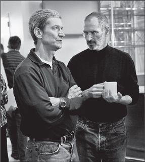

Tim Cook and Jobs, 2007
When Steve Jobs returned to Apple and produced the “Think Different” ads and the iMac in his first year, it confirmed what most people already knew: that he could be creative and a visionary. He had shown that during his first round at Apple. What was less clear was whether he could run a company. He had definitely not shown that during his first round.
在重返苹果公司之后的第一年，史蒂夫·乔布斯推出了“非同凡想”广告和iMac,再一次向世人展现了他的创意和远见——这一点，他在苹果公司的第一阶段就表现出来了。但大家都没有把握他是否能运营好一家公司。在此之前，他在这方面的能力未曾表现出来。
Jobs threw himself into the task with a detail-oriented realism that astonished those who were used to his fantasy that the rules of this universe need not apply to him. “He became a manager, which is different from being an executive or visionary, and that pleasantly surprised me,” recalled Ed Woolard, the board chair who lured him back.
乔布斯开始投入到一些以细节为导向的很现实的工作里，这让曾经和他共事过的人很惊讶，之前的他是那样桀骜不驯，世间的条条框框似乎在他身上毫无约束作用。“他成为了一个经理人，而非之前的身份——髙管或愿景师。他的改变确实让我又惊又喜。”董事长埃德·伍拉德回忆道，是他诱使乔布斯回来的。
His management mantra was “Focus.” He eliminated excess product lines and cut extraneous features in the new operating system software that Apple was developing. He let go of his control-freak desire to manufacture products in his own factories and instead outsourced the making of everything from the circuit boards to the finished computers. And he enforced on Apple’s suppliers a rigorous discipline. When he took over, Apple had more than two months’ worth of inventory sitting in warehouses, more than any other tech company. Like eggs and milk, computers have a short shelf life, so this amounted to at least a $500 million hit to profits. By early 1998 he had halved that to a month.
他的管理准则是“专注”。他取消了多余的生产线，去除了正在开发的操作系统中无关紧要的功能。他还放下了对产品制造过程的控制欲，把从电路板到成品计算机的制造全部外包了出去。他对供应商的要求极其严苛。当他开始接管苹果公司的时候，产品的库存期已超过两个月，这比任何一家科技公司都要长。就像鸡蛋和牛奶一样，计算机的贮存期限也很短，这么长的库存周期对利润造成的潜在损失威胁髙达5亿美元。到1998年初，乔布斯把库存期缩短为一个月。
Jobs’s successes came at a cost, since velvety diplomacy was still not part of his repertoire. When he decided that a division of Airborne Express wasn’t delivering spare parts quickly enough, he ordered an Apple manager to break the contract. When the manager protested that doing so could lead to a lawsuit, Jobs replied, “Just tell them if they fuck with us, they’ll never get another fucking dime from this company, ever.” The manager quit, there was a lawsuit, and it took a year to resolve. “My stock options would be worth $10 million had I stayed,” the manager said, “but I knew I couldn’t have stood it—and he’d have fired me anyway.” The new distributor was ordered to cut inventory 75%, and did. “Under Steve Jobs, there’s zero tolerance for not performing,” its CEO said. At another point, when VLSI Technology was having trouble delivering enough chips on time, Jobs stormed into a meeting and started shouting that they were “fucking dickless assholes.” The company ended up getting the chips to Apple on time, and its executives made jackets that boasted on the back, “Team FDA.”
乔布斯的成功来之不易，因为“怀柔政策”仍然不在他的原则之内。当他发现安邦快运（AirborneExpress）下属的一家分公司运送零件的速度不够快时，他让苹果公司的一个经理去终止合约。这位经理说这样做可能会导致法律诉讼，乔布斯回答：“你就告诉他们，如果他们糊弄我们，那他们永远别想从我们这儿再拿到一分钱。”那位经理辞职了，案子闹上了法庭，用了一年的时间才解决。“如果我能继续待下去，我的股票期权现在会值1000万美元，”那位经理说，“但是我知道我不可能拥有了——无论如何，他都会把我炒了。”新的经销商被规定把库存减少75%，最终也做到了。“乔布斯丝毫不能容忍差错。”这家公司的CEO说。当VSLI公司出现问题无法按时送来足够的芯片时，乔布斯在会议上大发雷霆，大骂他们是“没有生殖器的混蛋”②。最终，VSLI还是把芯片准时送到了苹果公司。该公司的高管们还专门做了背后印有“FDA团队”的夹克衫。
After three months of working under Jobs, Apple’s head of operations decided he could not bear the pressure, and he quit. For almost a year Jobs ran operations himself, because all the prospects he interviewed “seemed like they were old-wave manufacturing people,” he recalled. He wanted someone who could build just-in-time factories and supply chains, as Michael Dell had done. Then, in 1998, he met Tim Cook, a courtly thirty-seven-year-old procurement and supply chain manager at Compaq Computers, who not only would become his operations manager but would grow into an indispensable backstage partner in running Apple. As Jobs recalled:
在和乔布斯工作了3个月之后，苹果公司的运营主管因为不堪压力而辞职。在之后将近一年的时间里，乔布斯亲自负责运营，因为他认为来面试的人“都是些在生产制造方面观念陈旧的家伙”，他回忆道，他想找一个能够建立准时制工厂和供应链的人，就像迈克尔·戴尔做的那样。1998年，他遇到了蒂姆·库克。蒂姆·库克37岁，彬彬有礼，当时是康柏计算机公司的采购和供应链经理。后来，他不仅成为了苹果公司的运营经理，又逐渐成为运营苹果公司不可或缺的幕后搭档。乔布斯回忆道：
Tim Cook came out of procurement, which is just the right background for what we needed. I realized that he and I saw things exactly the same way. I had visited a lot of just-in-time factories in Japan, and I’d built one for the Mac and at NeXT. I knew what I wanted, and I met Tim, and he wanted the same thing. So we started to work together, and before long I trusted him to know exactly what to do. He had the same vision I did, and we could interact at a high strategic level, and I could just forget about a lot of things unless he came and pinged me.
Cook, the son of a shipyard worker, was raised in Robertsdale, Alabama, a small town between Mobile and Pensacola a half hour from the Gulf Coast. He majored in industrial engineering at Auburn, got a business degree at Duke, and for the next twelve years worked for IBM in the Research Triangle of North Carolina. When Jobs interviewed him, he had recently taken a job at Compaq. He had always been a very logical engineer, and Compaq then seemed a more sensible career option, but he was snared by Jobs’s aura. “Five minutes into my initial interview with Steve, I wanted to throw caution and logic to the wind and join Apple,” he later said. “My intuition told me that joining Apple would be a once-in-a-lifetime opportunity to work for a creative genius.” And so he did. “Engineers are taught to make a decision analytically, but there are times when relying on gut or intuition is most indispensable.”
蒂姆·库克从前是做采购的，这恰好是我们所需要的背景。我发现，他和我看待问题的方式是一样的。我在日本参观过很多采用准时制生产的工厂，也曾为Mac和NeXT建立这样的工厂。我知道我想要什么，然后就遇到了蒂姆，他和我想的一样。于是我们就开始合作，不久之后，我越发确信他十分清楚自己该做什么。我们的设想差不多，我们也可以在高级战略的层面上进行互动。我会忘记多事，他总是能提醒我。
库克在亚拉巴马州的罗伯茨代尔长大，这是一个位于莫比尔市和彭萨科拉市之间的小镇，距离墨西哥湾大约半小时的路程。他的父亲是一家造船厂的工人。库克先是在奥本大学学习工业工程，随后又在杜克大学取得了管理学学位，在接下来的12年里，他在北卡罗来纳州的三角研究园（ResearchTriangle）为IBM工作。乔布斯面试他的时候，库克刚刚得到康柏公司的工作。他一直是位逻辑严谨的工程师，康柏公司的职位似乎是一个更加理性的选择，但是他被乔布斯放出的光芒吸引了。“在我第一次面试中，5分钟之内我就决定把谨慎和逻辑都拋在脑后,我要加入苹果。”他后来说，“我的直觉告诉我，加入苹果、为一个创意天才工作,这是我这一生唯一的机会。”于是他辞职加入了苹果。“工程师应该是通过理性的分析去作出决定，但是难免会出现依赖内心直觉的时刻。”
At Apple his role became implementing Jobs’s intuition, which he accomplished with a quiet diligence. Never married, he threw himself into his work. He was up most days at 4:30 sending emails, then spent an hour at the gym, and was at his desk shortly after 6. He scheduled Sunday evening conference calls to prepare for each week ahead. In a company that was led by a CEO prone to tantrums and withering blasts, Cook commanded situations with a calm demeanor, a soothing Alabama accent, and silent stares. “Though he’s capable of mirth, Cook’s default facial expression is a frown, and his humor is of the dry variety,” Adam Lashinsky wrote in Fortune. “In meetings he’s known for long, uncomfortable pauses, when all you hear is the sound of his tearing the wrapper off the energy bars he constantly eats.”
在苹果公司，他成了贯彻乔布斯直觉的角色。他默默耕耘，全心投入工作，至今未娶。大多数日子里，他都在凌晨4点半起床，收发邮件，然后去健身房运动一个小时，6点刚过就到达办公室；他在每周日的晚上都要安排电话会议，为下一周的工作作准备。在一个易怒、暴躁的老板手下，库克总是用冷静的态度以及亚拉巴马州人特有的那种镇静的口音和沉着的目光来控制局面。“尽管库克也会感到开心，但他一贯的表情就是皱眉，他的幽默感也是一本正经的、不露声色的《财富》杂志的亚当·拉辛斯基（AdamLashinsky）这样写道，“在会议上，他以让人不适的长时间停顿而出名。每到这时，你听到的都是他在撕他常吃的能量棒包装纸的声音。”
At a meeting early in his tenure, Cook was told of a problem with one of Apple’s Chinese suppliers. “This is really bad,” he said. “Someone should be in China driving this.” Thirty minutes later he looked at an operations executive sitting at the table and unemotionally asked, “Why are you still here?” The executive stood up, drove directly to the San Francisco airport, and bought a ticket to China. He became one of Cook’s top deputies.
在任职初期的一次会议上，库克听说苹果公司的某一家中国供应商出了问题。“这太糟糕了。”他说，“应该有人马上去中国处理这件事。”30分钟后，他看着还在桌前坐着的一位运营主管，面无表情地说：“你怎么还没走？”那位主管站起来，没带任何行李，直接开车去了旧金山机场，买了机票飞往中国。他后来成了库克的第一副手。
Cook reduced the number of Apple’s key suppliers from a hundred to twenty-four, forced them to cut better deals to keep the business, convinced many to locate next to Apple’s plants, and closed ten of the company’s nineteen warehouses. By reducing the places where inventory could pile up, he reduced inventory. Jobs had cut inventory from two months’ worth of product down to one by early 1998. By September of that year, Cook had gotten it down to six days. By the following September, it was down to an amazing two days’ worth. In addition, he cut the production process for making an Apple computer from four months to two. All of this not only saved money, it also allowed each new computer to have the very latest components available.
库克把苹果的主要供应商从100家减少到24家，并要求他们减少其他公司的订单，还说服许多家供应商迁到苹果工厂旁边。此外，他还把公司的19个库房关闭了10个。库房减少了，存货就无处堆放，于是他又减少了库存。到1998年初，乔布斯把两个月的库存期缩短到一个月。然而到同年9月底，库克已经把库存期缩短到6天 下一年的9月，这个数字已经达到惊人的两天——有时仅仅是15个小时。另外，库克还把制造苹果计算机的生产周期从4个月压缩到两个月。所有这些改革不仅降低了成本，而且也保证了每一台新计算机都安装了最新的组件——
注释：
①《疯狂依旧》，保罗·西蒙的一首歌曲名。
②原文为FuckingDieklessAssholes,缩写就是FDA。
On a trip to Japan in the early 1980s, Jobs asked Sony’s chairman, Akio Morita, why everyone in his company’s factories wore uniforms. “He looked very ashamed and told me that after the war, no one had any clothes, and companies like Sony had to give their workers something to wear each day,” Jobs recalled. Over the years the uniforms developed their own signature style, especially at companies such as Sony, and it became a way of bonding workers to the company. “I decided that I wanted that type of bonding for Apple,” Jobs recalled.
20世纪80年代初，乔布斯在日本拜访时曾问过索尼公司的主席盛田昭夫（AkioMorita）,为什么公司里的所有人都穿着制服？“他看起来非常惭愧地告诉我，在战后，人们都没有衣服穿，所以一些公司必须要给工人提供每天的衣物。”乔布斯回忆道。几年之后，制服成为了他们标志性的穿着，尤其是在索尼公司。而且这也成为了一种凝聚员工的方式。“我也想让苹果这样做。”乔布斯回忆道。
Sony, with its appreciation for style, had gotten the famous designer Issey Miyake to create one of its uniforms. It was a jacket made of ripstop nylon with sleeves that could unzip to make it a vest. “So I called Issey and asked him to design a vest for Apple,” Jobs recalled. “I came back with some samples and told everyone it would be great if we would all wear these vests. Oh man, did I get booed off the stage. Everybody hated the idea.”
作为一家注重时尚风格的公司，索尼聘请了著名设计师三宅一生为他们设计制服。这是一款防撕裂尼龙面料的外套，袖子可以拆卸下来，变成一件背心。“所以我给三宅一生打电话，请他给苹果公司的员工设计一件背心。”乔布斯回忆道，“我带回来一些样品，然后对大家说，如果我们都穿这种背心，那该多好。但是天哪，我被噶了倒彩。所有人都不赞成这个建议。”
In the process, however, he became friends with Miyake and would visit him regularly. He also came to like the idea of having a uniform for himself, because of both its daily convenience (the rationale he claimed) and its ability to convey a signature style. “So I asked Issey to make me some of his black turtlenecks that I liked, and he made me like a hundred of them.” Jobs noticed my surprise when he told this story, so he gestured to them stacked up in the closet. “That’s what I wear,” he said. “I have enough to last for the rest of my life.”
不过，在这个过程中，乔布斯和三宅一生成为了朋友，也会定期去看他。乔布斯又有了新的想法，他想给自己设计一套制服，一是为了日常方便穿着（这是他的基本原则），二是传达一种标志性的风格。“我很喜欢三宅穿的黑色高领衫，让他帮我做几件，结果他帮我做了上百件。”乔布斯看出了我的惊讶，所以他打开衣柜向我展示摞在里面的衣服。“我穿的就是这种，”他说，“这些够我穿一辈子了。”
Despite his autocratic nature—he never worshipped at the altar of consensus—Jobs worked hard to foster a culture of collaboration at Apple. Many companies pride themselves on having few meetings. Jobs had many: an executive staff session every Monday, a marketing strategy session all Wednesday afternoon, and endless product review sessions. Still allergic to PowerPoints and formal presentations, he insisted that the people around the table hash out issues from various vantages and the perspectives of different departments.
虽然乔布斯天性独裁专制，从不寄望于共识，但他却着力在公司内部营造出一种合作的文化。很多公司都在力求减少会议，乔布斯却独独相反：每周一是髙管会议、每周三下午要开营销战略会议，此外还有无数的产品评论会。他不喜欢用PPT，也不喜欢正式的讲话，他坚持让所有参会者一起讨论问题，利用各方优势，听取不同部门的观点。
Because he believed that Apple’s great advantage was its integration of the whole widget—from design to hardware to software to content—he wanted all departments at the company to work together in parallel. The phrases he used were “deep collaboration” and “concurrent engineering.” Instead of a development process in which a product would be passed sequentially from engineering to design to manufacturing to marketing and distribution, these various departments collaborated simultaneously. “Our method was to develop integrated products, and that meant our process had to be integrated and collaborative,” Jobs said.
因为他坚信，苹果公司的一个巨大优势就是各类资源的整合，从设计、硬件、软件，直到内容。他希望公司的所有部门都能够并行合作。他把这称为“深度合作”（deepcollaboration）和“并行工程”（concurrentengineering）。所以，一个产品的开发过程并不是像流水线一样先从工程到设计，再到营销，最后分销，相反，这些部门是同时进行工作的。“我们的方针就是开发髙度整合的产品，这也意味着我们的生产过程也必须是整合和协作完成的。”乔布斯说。
This approach also applied to key hires. He would have candidates meet the top leaders—Cook, Tevanian, Schiller, Rubinstein, Ive—rather than just the managers of the department where they wanted to work. “Then we all get together without the person and talk about whether they’ll fit in,” Jobs said. His goal was to be vigilant against “the bozo explosion” that leads to a company’s being larded with second-rate talent:
这一政策也应用到了重要职位的招聘上。他会安排候选人直接面见公司的主要负责人——库克、泰瓦尼安、席勒、鲁宾斯坦，还有艾弗——而不是只见一下部门经理。“然后我们就会一起讨论他们能不能入选。”乔布斯说。他这样做的目的是避免“笨蛋大爆炸”，免得公司上下充斥着“二流人才”：
For most things in life, the range between best and average is 30% or so. The best airplane flight, the best meal, they may be 30% better than your average one. What I saw with Woz was somebody who was fifty times better than the average engineer. He could have meetings in his head. The Mac team was an attempt to build a whole team like that, A players. People said they wouldn’t get along, they’d hate working with each other. But I realized that A players like to work with A players, they just didn’t like working with C players. At Pixar, it was a whole company of A players. When I got back to Apple, that’s what I decided to try to do. You need to have a collaborative hiring process. When we hire someone, even if they’re going to be in marketing, I will have them talk to the design folks and the engineers. My role model was J. Robert Oppenheimer. I read about the type of people he sought for the atom bomb project. I wasn’t nearly as good as he was, but that’s what I aspired to do.
在生活中，大多数情况下，“最佳”和“一般”之间大约相差30%。无论是品质一流的飞机还是最棒的美食，它们也只是比平均水准高30%。但是当我见到沃兹尼亚克时，我认为他比普通工程师要优秀50倍。很多要开会解决的事在他的脑子里就能完成了。麦金塔团队就致力于成为一个全部是他这样的一流选手的团队。人们总是说他们和别人合不来，他们不喜欢团队合作。但是我发现，一流选手喜欢和一流选手共事，他们只是不喜欢和三流选手在一起罢了。在皮克斯公司，整个公司的人都是一波选手。当我回到苹果，我决定也这么试一下。首先就需要一个协作式的招聘过程。当我们招聘时，即使那个人是要去营销部门的，我也会让他和设计部的人以及工程师们聊聊。我一直把罗伯特·奥本海默（J.RobertOppenheimer）视为榜样。我知道他在建立原子弹项目小组时的招聘要求。我没有他那么优秀，但这是我渴望达到的目标。
The process could be intimidating, but Jobs had an eye for talent. When they were looking for people to design the graphical interface for Apple’s new operating system, Jobs got an email from a young man and invited him in. The applicant was nervous, and the meeting did not go well. Later that day Jobs bumped into him, dejected, sitting in the lobby. The guy asked if he could just show him one of his ideas, so Jobs looked over his shoulder and saw a little demo, using Adobe Director, of a way to fit more icons in the dock at the bottom of a screen. When the guy moved the cursor over the icons crammed into the dock, the cursor mimicked a magnifying glass and made each icon balloon bigger. “I said, ‘My God,’ and hired him on the spot,” Jobs recalled. The feature became a lovable part of Mac OSX, and the designer went on to design such things as inertial scrolling for multi-touch screens (the delightful feature that makes the screen keep gliding for a moment after you’ve finished swiping).
招聘的过程是严苛的，但是乔布斯能够慧眼识人。当他们想找人设计新的苹果操作系统的图形界面时，乔布斯收到了一个年轻人的邮件，于是就叫他到公司来。面试进展得并不顺利，年轻人显得太紧张。这天晚些时候，乔布斯碰见了他，他正沮丧地坐在大厅里。年轻人问乔布斯可不可以向他展示一个作品。乔布斯在他身后不以为然地看着，他看到了一段用AdobeDirector制作的视频：所有图标都在屏幕的下方排成一排，当年轻人把鼠标停在某一个图标上时，鼠标就会像放大镜一样把那个图标膨胀变大。“我说，我的天啊，然后当场就雇了他。”乔布斯回忆道。这一界面特征成为了苹果操作系统MaeOSX中一个非常受人喜爱的部分，这个设计师又接着设计出了多点触控屏慕的惯性翻页功能（是指在鼠标停止滑动之后，页面仍能够自动翻页一段时间）。
Jobs’s experiences at NeXT had matured him, but they had not mellowed him much. He still had no license plate on his Mercedes, and he still parked in the handicapped spaces next to the front door, sometimes straddling two slots. It became a running gag. Employees made signs saying, “Park Different,” and someone painted over the handicapped wheelchair symbol with a Mercedes logo.
乔布斯在NeXT公司的经历使他成熟，却没有使他更圆熟。他依然还没有给他的奔驰车挂牌照，而且仍旧把车停在前门旁边的残疾人停车区，有时候还要占两个车位。这辆奔驰车成了一个“流动的笑话”。员工们还做了一个标志——“非凡泊车”①，更有甚者，把残疾人车位标志上的轮椅也改成了奔驰的标志。
People were allowed, even encouraged, to challenge him, and sometimes he would respect them for it. But you had to be prepared for him to attack you, even bite your head off, as he processed your ideas. “You never win an argument with him at the time, but sometimes you eventually win,” said James Vincent, the creative young adman who worked with Lee Clow. “You propose something and he declares, ‘That’s a stupid idea,’ and later he comes back and says, ‘Here’s what we’re going to do.’ And you want to say, ‘That’s what I told you two weeks ago and you said that’s a stupid idea.’ But you can’t do that. Instead you say, ‘That’s a great idea, let’s do that.’”
员工们能够，甚至是被鼓励去挑战他，有时他还会因此而尊敬你。但是在他处理你的意见时，你必须要准备好迎接他的回击，他甚至会把你骂个狗血淋头。“你永远不可能当时就赢得这场辩论，不过有时你会在最后胜出。”和李·克劳一起工作的创意广告人詹姆斯·文森特说。“你提出一些观点，他说：‘这是个愚蠢的想法。’之后他又回来，说：‘我们就这么做吧。’你会忍不住想说：‘我两个星期前提出来的时候，你说这是个愚蠢的想法。’但是你不能这么说，而只能说：‘这点子很棒，我们就这么做吧。’”
People also had to put up with Jobs’s occasional irrational or incorrect assertions. To both family and colleagues, he was apt to declare, with great conviction, some scientific or historical fact that had scant relationship to reality. “There can be something he knows absolutely nothing about, and because of his crazy style and utter conviction, he can convince people that he knows what he’s talking about,” said Ive, who described the trait as weirdly endearing. Yet with his eye for detail, Jobs sometimes correctly pounced on tiny things others had missed. Lee Clow recalled showing Jobs a cut of a commercial, making some minor changes he requested, and then being assaulted with a tirade about how the ad had been completely destroyed. “He discovered we had cut two extra frames, something so fleeting it was nearly impossible to notice,” said Clow. “But he wanted to be sure that an image hit at the exact moment as a beat of the music, and he was totally right.”
人们还要忍受乔布斯偶尔提出的无理要求或错误主张。无论是对家人还是同事，他都会非常坚决地去断定一些跟现实没什么关系的科学或历史事实。“这世界上一定有什么事是他完全不了解的，但是他会利用他疯狂的表现力和坚信不疑，去说服人们相信他知道自己在讲什么。”艾弗说，并认为这是一种“古怪的可爱”。李·克劳回忆起，有一次他给乔布斯看一段广告片，是按照乔布斯的意见修改过的，但他还是被乔布斯长篇大论地批评了一顿，说他“把这个广告给彻底毁了”。于是克劳只好给乔布斯看之前的那些版本，试图证明他是错的。乔布斯有时火眼金睛，能够发现别人注意不到的细节。“有一次他发现我们多剪掉两个镜头，这两个镜头是一闪而过的，几乎不可能被发现。”克劳说，“但是他要求每幅画面都要和背景音乐结合得恰到好处，他的想法完全正确。”——
注释：
①原文为“ParkDifferent”，改编自苹果公司的广告语“非同凡想”（ThinkDifferent）。
Ed Woolard, his mentor on the Apple board, pressed Jobs for more than two years to drop the interim in front of his CEO title. Not only was Jobs refusing to commit himself, but he was baffling everyone by taking only $1 a year in pay and no stock options. “I make 50 cents for showing up,” he liked to joke, “and the other 50 cents is based on performance.” Since his return in July 1997, Apple stock had gone from just under $14 to just over $102 at the peak of the Internet bubble at the beginning of 2000. Woolard had begged him to take at least a modest stock grant back in 1997, but Jobs had declined, saying, “I don’t want the people I work with at Apple to think I am coming back to get rich.” Had he accepted that modest grant, it would have been worth $400 million. Instead he made $2.50 during that period.
两年多的时间里，乔布斯在苹果董事会的导师埃德·伍拉德一直在催促他把“临时”一词去掉。乔布斯不仅一直拒绝承认自己的职位，更让大家困惑的是，他每年只拿1美元年薪，而且也没有领取期权。乔布斯对此开玩笑说：“50美分是出勤，另外50美分要看工作表现。”自从他1997年7月回归以来，苹果的股价已从将近14美元涨到了2000年初互联网泡沫时期的102美元以上。1997年，伍拉德恳请他拿回一些股杈，但是乔布斯拒绝了：“我不希望公司里的同事认为我是为了钱才回来的。”如果他当初接受了伍拉德的请求，他的股票价值如今已达到4亿美元。但事实上，他这两年多只拿了2.5美元的工资。
The main reason he clung to his interim designation was a sense of uncertainty about Apple’s future. But as 2000 approached, it was clear that Apple had rebounded, and it was because of him. He took a long walk with Laurene and discussed what to most people by now seemed a formality but to him was still a big deal. If he dropped the interim designation, Apple could be the base for all the things he envisioned, including the possibility of getting Apple into products beyond computers. He decided to do so.
他坚持挂着“临时”名号的主要原因是他对苹果公司的未来有一种不确定感。但是随着2000年临近，很明显苹果已经东山再起了，而这都归功于他。他和妻子劳伦一起散步时讨论了这件事，大多数人都认为这是水到渠成，而他却觉得这是个重大的决定。如果他去掉了“临时”一词，苹果公司将可能实现他所有的设想，包括让苹果进军计算机产业以外的市场。他最终作出了决定。
Woolard was thrilled, and he suggested that the board was willing to give him a massive stock grant. “Let me be straight with you,” Jobs replied. “What I’d rather have is an airplane. We just had a third kid. I don’t like flying commercial. I like to take my family to Hawaii. When I go east, I’d like to have pilots I know.” He was never the type of person who could display grace and patience in a commercial airplane or terminal, even before the days of the TSA. Board member Larry Ellison, whose plane Jobs sometimes used (Apple paid $102,000 to Ellison in 1999 for Jobs’s use of it), had no qualms. “Given what he’s accomplished, we should give him five airplanes!” Ellison argued. He later said, “It was the perfect thank-you gift for Steve, who had saved Apple and gotten nothing in return.”
伍拉德非常兴奋，他表示董事会愿意给他巨额股份。“我直截了当地和你说吧，”乔布斯告诉他，“我更想要一架私人飞机。我刚刚有了第三个孩子。我不喜欢搭商业航班。我只是想带全家去夏威夷度假。当我去东海岸的时候，我更愿意让我认识的飞行贾开飞机。”他是一个对商业航班和航站楼毫无好感和耐心的人，即便是被美国运输安全管理局（TSA）接管之前也是一样。董事会成员拉里·埃利森爽快地答应了乔布斯的要求（乔布斯用过几次他的飞机，为此苹果公司在1999年向埃利森支付了10.2万美元）。埃利森还说：“看在他作出那么多贡献的分上，给他5架飞机都不为过！”他后来又说：“这是一个完美的‘致谢礼物’，他拯救了苹果，却不求回报。”
So Woolard happily granted Jobs’s wish, with a Gulfstream V, and also offered him fourteen million stock options. Jobs gave an unexpected response. He wanted more: twenty million options. Woolard was baffled and upset. The board had authority from the stockholders to give out only fourteen million. “You said you didn’t want any, and we gave you a plane, which you did want,” Woolard said.
所以，伍拉德愉快地答应了乔布斯的要求——一架湾流V型飞机，此外还赠与他1400万份期权。但是乔布斯的回应出乎所有人的意料。他想要更多：“2000万份。”伍拉德既困惑又生气。董事会只有权从股东那里分出1400万份期权。伍拉德说：“你说你不要别的，我们给了你一架飞机，你说你只要飞机。”
“I hadn’t been insisting on options before,” Jobs replied, “but you suggested it could be up to 5% of the company in options, and that’s what I now want.” It was an awkward tiff in what should have been a celebratory period. In the end, a complex solution was worked out that granted him ten million shares in January 2000 that were valued at the current price but timed to vest as if granted in 1997, plus another grant due in 2001. Making matters worse, the stock fell with the burst of the Internet bubble. Jobs never exercised the options, and at the end of 2001 he asked that they be replaced by a new grant with a lower strike price. The wrestling over options would come back to haunt the company.
乔布斯回答：“我从来没有在期权的问题上坚持过，但是你曾建议说，我最多能拿到公司5%的期权，这就是我现在想要的。”这个口角使原本的庆祝场面顿时尷尬起来。最终，他们研究出一个复杂的解决方案（基于2000年6月的一份“合二为一”的股权分割计划）：2000年1月，以现价授予乔布斯1000万股股票，但是视同已在1997年授予；2001年他还将再获得另一半期权。糟糕的是，互联网泡沫破裂之后股价下跌，乔布斯从未行使过这笔期权。到2001年底，乔布斯要求把期权的行权价格调低后再度授予。这场期权之争到后来还会困扰公司。
Even if he didn’t profit from the options, at least he got to enjoy the airplane. Not surprisingly he fretted over how the interior would be designed. It took him more than a year. He used Ellison’s plane as a starting point and hired his designer. Pretty soon he was driving her crazy. For example, Ellison’s had a door between cabins with an open button and a close button. Jobs insisted that his have a single button that toggled. He didn’t like the polished stainless steel of the buttons, so he had them replaced with brushed metal ones. But in the end he got the plane he wanted, and he loved it. “I look at his airplane and mine, and everything he changed was better,” said Ellison.
虽然没有从期杈当中获利，但乔布斯对飞机还是非常满意的。不出所料，他为飞机内部的设计大费周章，前后共花了一年多的时间。他雇了一个设计师，从埃利森的飞机开始练手。很快，设计师就被他逼疯了。打个比方，在埃利森的G-5飞机的机舱之间有一扇门，门上有按钮分别控制开与关。乔布斯要求在他的飞机里，要换成二合一可以转换的按钮；而且他还不喜欢按钮那光滑的不镑钢材料，要把它们都换成拉丝金属的。最终他得到了一架他心目中的飞机，他很喜欢它。埃利森说：“我对比了一下我们俩的飞机，他的改装确实更好。”
At the January 2000 Macworld in San Francisco, Jobs rolled out the new Macintosh operating system, OSX, which used some of the software that Apple had bought from NeXT three years earlier. It was fitting, and not entirely coincidental, that he was willing to incorporate himself back at Apple at the same moment as the NeXT OS was incorporated into Apple’s. Avie Tevanian had taken the UNIX-related Mach kernel of the NeXT operating system and turned it into the Mac OS kernel, known as Darwin. It offered protected memory, advanced networking, and preemptive multitasking. It was precisely what the Macintosh needed, and it would be the foundation of the Mac OS henceforth. Some critics, including Bill Gates, noted that Apple ended up not adopting the entire NeXT operating system. There’s some truth to that, because Apple decided not to leap into a completely new system but instead to evolve the existing one. Application software written for the old Macintosh system was generally compatible with or easy to port to the new one, and a Mac user who upgraded would notice a lot of new features but not a whole new interface.
2000年1月，在旧金山的Macworld大会上，乔布斯发布了新的操作系统MacOSX,其中使用了苹果公司3年前从NeXT购买的一些软件。这是个恰当的时机，不完全是巧合——就在NeXT的操作系统被合并进苹果计算机时，乔布斯发觉自己也想“合并”回苹果公司。阿维·泰瓦尼安把NeXT操作系统中基于Unix的Mach内核转换成了MacOS内核——也被叫做“达尔文”（Darwin）。这种内核提供内存保护机制、升级的网络功能，以及抢先式多任务处理功能。这正是麦金塔需要的操作系统，而且也为后来的MacOS系统奠定了基础。包括盖茨在内的一些批评人士发现，苹果并没有完全采用NeXT的操作系统。事实的确如此，因为苹果并不想直接推出一个与以往完全不同的新系统，而是想对现有的系统进行更新。老的麦金塔程序中的应用软件都适用于或易于转换到新系统中，而苹果机的用户都会发现，升级后的系统多了很多新功能，而不仅仅是全新的界面。
The fans at Macworld received the news with enthusiasm, of course, and they especially cheered when Jobs showed off the dock and how the icons in it could be magnified by passing the cursor over them. But the biggest applause came for the announcement he reserved for his “Oh, and one more thing” coda. He spoke about his duties at both Pixar and Apple, and said that he had become comfortable that the situation could work. “So I am pleased to announce today that I’m going to drop the interim title,” he said with a big smile. The crowd jumped to its feet, screaming as if the Beatles had reunited. Jobs bit his lip, adjusted his wire rims, and put on a graceful show of humility. “You guys are making me feel funny now. I get to come to work every day and work with the most talented people on the planet, at Apple and Pixar. But these jobs are team sports. I accept your thanks on behalf of everybody at Apple.”
Macworld大会上的苹果粉丝们对这一消息反应热烈。当乔布斯在展示系统桌面时，鼠标滑过使图标依次变大，大家爆发出阵阵欢呼。但是，掌声最热烈的时刻是他每一次在结尾时的“保留节目”——“哦，还有一件事……”他谈了关于他在皮克斯公司和苹果公司的工作，并表示这种双重身份是行得通的。“所以我今天很高兴地宣布，我要摘掉‘临时’这个帽子。”他微笑着说道。人们激动地起立尖叫，就像是看到披头士乐队再聚首了一样。乔布斯咬了咬嘴唇，调整了一下金丝镜架，换上一副优雅而谦卑的面孔，说：“你们让我觉得有点儿不好意思了。我每天都和世界上最聪明的人们一起工作，无论是在苹果还是在皮克斯。但是这些成就是团队合作的结果。我代表苹果公司的每一个人，接受你们的感谢。”